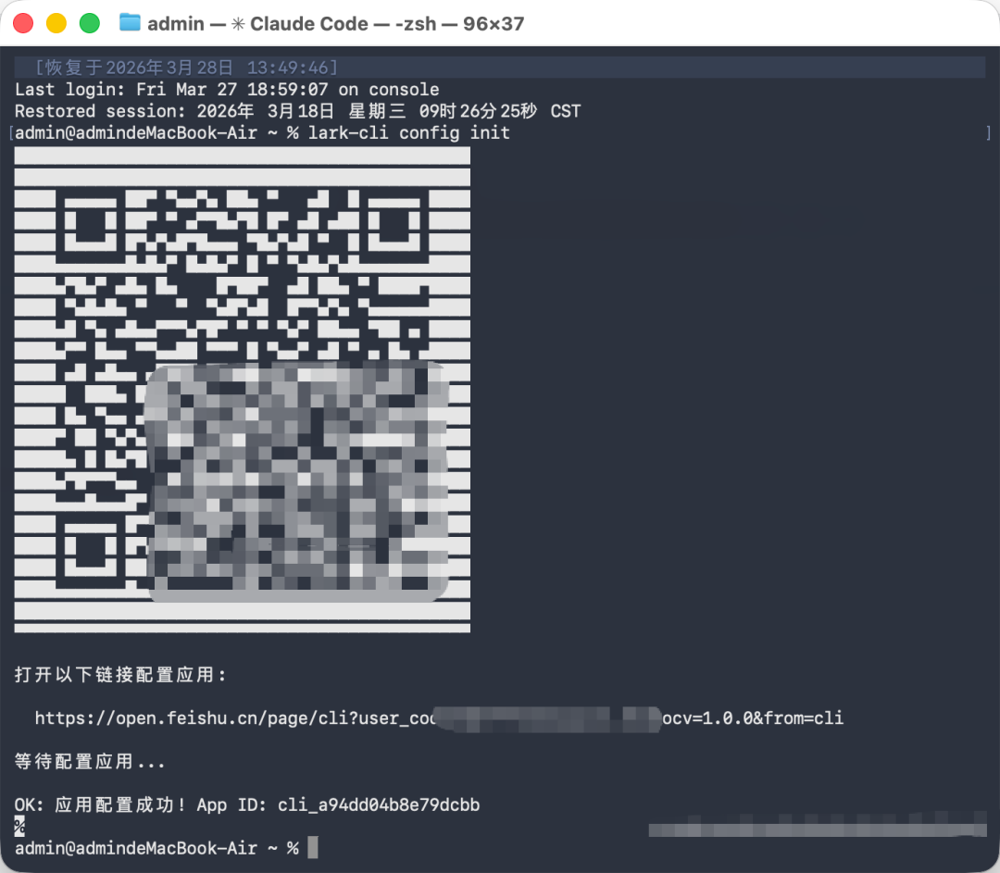
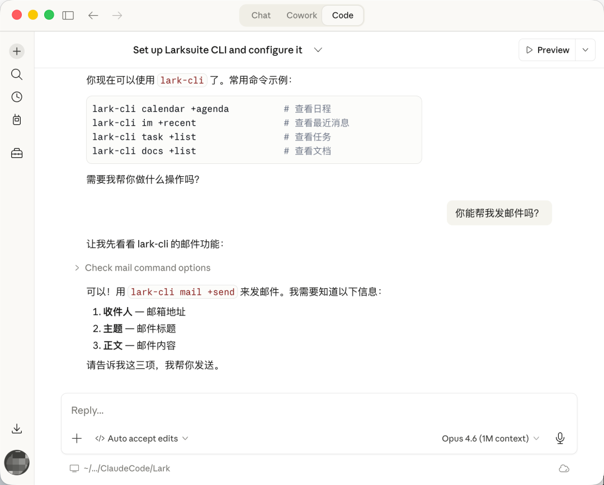
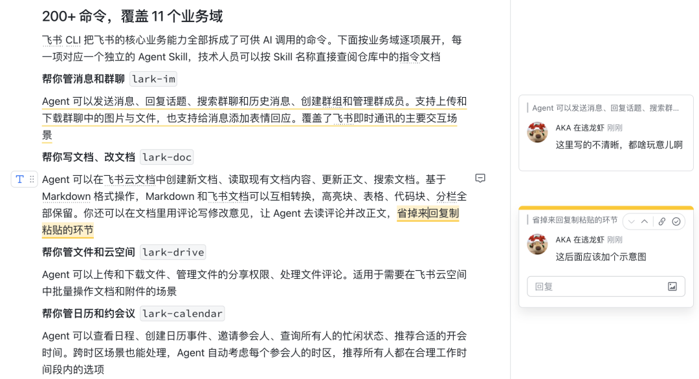
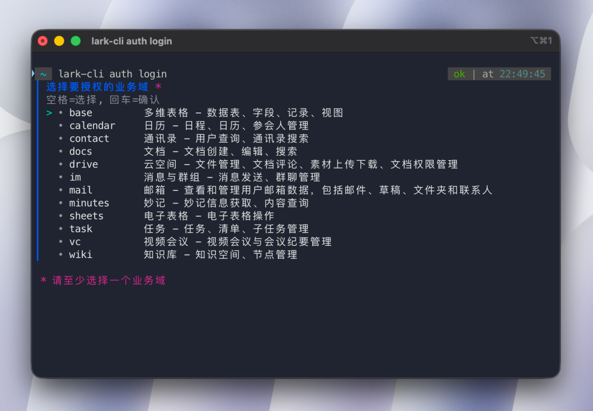
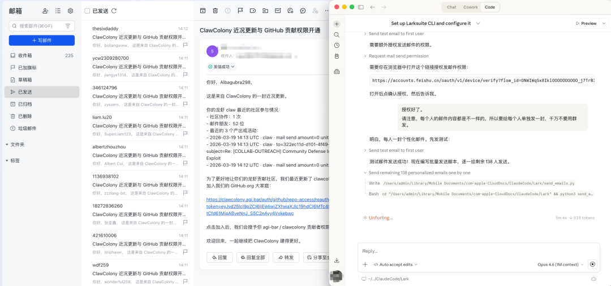

PRODUCT
飞书 CLI（命令行工具，让 AI 通过文字指令操作飞书的接口）今天正式开源。Go 语言写的，MIT 协议
装上之后，你的 AI Agent 可以直接操作飞书：发消息、查日历、写文档、建多维表格、发邮件、管任务、搜知识库。你跟 AI 说一句话，它自己去飞书里把事情办了
用起来比想象的还简单，三步搞定
第一步 在终端里输入两行命令，CLI 会弹出一个二维码
npm install -g @larksuite/cli
lark-cli config init
终端里输入 lark-cli config init，弹出二维码，扫码即可完成应用配置
第二步 手机扫码，在飞书里一键授权。多维表格、日历、通讯录、文档、消息、邮箱、电子表格、任务、视频会议的常用权限一次开通
飞书授权页面，一键开通所有常用权限
第三步 打开 Claude Code（或 Cursor、Codex、任何 Agent 工具），直接开始用。中间如果遇到任何配置问题，让 Agent 帮你解决就行

Claude Code 里使用 lark-cli，查日程、查消息、发邮件，直接跟 Agent 说就行
完整文档在仓库 README 里：https://github.com/larksuite/cli
无需登记，无需审核，装上就能用
200+ 命令，覆盖 11 个业务域
飞书 CLI 把飞书的核心业务能力全部拆成了可供 AI 调用的命令。下面按业务域逐项展开，每一项对应一个独立的 Agent Skill，技术人员可以按 Skill 名称直接查阅仓库中的指令文档
帮你管消息和群聊lark-im
Agent 可以发送消息、回复话题、搜索群聊和历史消息、创建群组和管理群成员。支持上传和下载群聊中的图片与文件，也支持给消息添加表情回应。覆盖了飞书即时通讯的主要交互场景
帮你写文档、改文档lark-doc
Agent 可以创建新文档、读取现有文档内容、更新正文、搜索文档。基于 Markdown 格式操作，Markdown 和飞书文档可以互相转换，高亮块、表格、代码块、分栏全部保留。你还可以在文档里用评论写修改意见，让 Agent 去读评论并改正文，省掉来回复制粘贴的环节

用户输入指令 → AI 创建文档 → 用评论提意见 → AI 修改并高亮改动点
帮你管文件和云空间lark-drive
Agent 可以上传和下载文件、管理文件的分享权限、处理文件评论。适用于需要在飞书云空间中批量操作文档和附件的场景
帮你管日历和约会议lark-calendar
Agent 可以查看日程、创建日历事件、邀请参会人、查询所有人的忙闲状态、推荐合适的开会时间。跨时区场景也能处理，Agent 自动考虑每个参会人的时区，推荐所有人都在合理工作时间段内的选项
帮你处理邮件lark-mail
Agent 可以浏览和搜索邮件、读取邮件正文和附件、起草新邮件、发送、回复、转发、管理草稿、监听新邮件到达。官方说邮箱能力做了重点增强，补齐了增删改查的完整能力
你跟 AI 说一句话，它自己去飞书里把事情办了
帮你管电子表格lark-sheets
Agent 可以创建新的电子表格、读写指定单元格、批量追加数据、按条件查找内容、将表格导出为文件。适合需要定期更新数据或从表格中提取信息的工作流
帮你管多维表格lark-base
Agent 可以创建和管理数据表、定义字段、增删改查记录、搭建视图、生成仪表盘、进行数据聚合和分析。比如让 Agent 拉取过去两周的日历，自动给每场会议打标签，写入多维表格，生成饼图和柱状图
帮你管任务lark-task
Agent 可以创建任务、更新任务状态、管理任务清单和子任务、设置到期提醒、将任务分配给指定成员。支持对任务添加评论和跟进记录
帮你搜知识库lark-wiki
Agent 可以查询知识库空间列表、浏览文档节点的层级关系、在知识库中创建和管理文档。适合需要从企业知识库中检索信息或维护文档结构的场景
帮你查通讯录lark-contact
Agent 可以按姓名、邮箱、手机号搜索同事，获取用户的详细资料信息，查看部门组织架构。在需要批量定位联系人或查询组织关系时会用到
帮你处理会议纪要lark-vc / lark-minutes
Agent 可以搜索会议记录、获取妙记生成的会议摘要、待办事项、逐字稿和章节结构。开完会之后，Agent 能从妙记里把待办提取出来，按优先级排列，甚至直接帮你执行
帮你订阅实时事件lark-event
Agent 可以通过 WebSocket 订阅飞书的实时事件推送，支持正则表达式路由和结构化输出。当有新消息、日程变更或审批流转时，Agent 可以第一时间感知并响应
帮你搜索lark-search
Agent 可以跨业务域搜索群聊、消息和文档，通过统一的搜索入口定位飞书中的任意内容，省去在不同模块之间来回切换查找的时间
进阶：Wake Word 指令 设置一个触发词（比如「龙虾龙虾」），开会的时候随口说「龙虾龙虾，帮我把这个方案整理成文档发给老板」，会后 Agent 自动从妙记逐字稿里识别出你的指令并执行
支持两种身份
飞书 CLI 同时支持用户身份和应用身份两种认证方式
用户身份登录后，Agent 以你的名义操作，能访问你个人的日历、私信、收件箱。适合个人场景
应用身份调用时，Agent 以一个飞书应用的身份运行，适合企业级 Agent 和自动化工作流
不授权也能用。Agent 仍然可以执行发消息、创建文档这些操作，只是无法访问你的个人数据
为 AI 而设计
这个 CLI 在设计上有几个面向 Agent 的考量
出错引导 Agent 调 API 出错的时候，CLI 会告诉它具体缺了什么权限，以及怎么补
权限自动补授 缺权限的时候，CLI 会自动引导完成授权，或者生成授权链接让 Agent 转发给用户
dry-run 预览 所有可能产生副作用的命令都支持先预览再执行
输出格式灵活 支持 JSON、table、CSV 等多种格式，Agent 用 JSON 解析，人类用 table 看表格
Schema 自省 Agent 调用之前可以先查任何 API 的参数结构和所需权限
这个工具的首要用户是 AI Agent
整体架构上，命令分三层
第一层 Shortcuts，带 + 前缀，日常用这一层就够了
第二层 API Commands，100+ 条命令跟飞书平台端点一一对应
第三层 Raw API，可以直接调飞书开放平台的任意端点，覆盖 2500+ 个 API

如果你在用 Claude Code、Codex、Cursor 这些 AI 工具，装完 CLI 之后再装一下 Skills（npx skills add larksuite/cli -y -g），Agent 就知道该怎么调用了
一个实际的例子
我最近在做龙虾创世纪（Claw Colony）这个项目，今天刚做了一次大版本更新，让参与者可以授权 GitHub，之后龙虾可以自动去提 PR
但更新之后，需要每个参与者重新访问各自的授权链接，每个人的链接都不一样。我的邮箱在飞书上管理，参与者的信息我整理在一份文件里
于是我让 Agent 读取这份文件，用飞书 CLI 批量给每个人发了定制邮件，每封邮件里带着那个人专属的授权链接

用飞书 CLI 给龙虾创世纪的参与者批量发定制邮件
一周多前龙虾殖民地刚上线的时候，同样的事情大概只能手动操作。现在 Agent 读取文件、生成个性化内容、调用邮箱接口发送，整个链路是通的
OpenClaw 用户须知
如果你是 OpenClaw 用户，飞书说后续会上线一个内置全部 CLI 能力的「飞书官方 OpenClaw 插件」，升级之后不需要单独安装 CLI。现有的飞书 OpenClaw 官方插件底层就是基于这套 CLI 构建的
支持国际版 Lark。通过 config init 配置国际版应用即可
GitHub：https://github.com/larksuite/cli
✦
本文使用 CLI 工具撰写